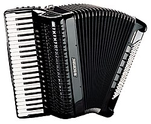

Акордео́н (фр. accordéon) — музичний інструмент, ручна гармоніка. У 1829 році віденський органний майстер Кирило Деміан отримав патент на удосконалену ним гармоніку під назвою «Акордеон».[5] В українській традиції радянського періоду акордеоном зазвичай називали інструменти з правою клавіатурою фортепіанного типу, на відміну від баяна — інструмента з кнопковою клавіатурою. Наприкінці XIX століття акордеони у великій кількості вироблялися в Клінгенталі (Саксонія). До цього часу найпоширенішими в Україні та на території країн колишнього СРСР є акордеони німецької фірми «Weltmeister» (різних марок, наприклад, Diana, Stella). Зустрічаються також інструменти інших зарубіжних виробників: «Horch», Hohner (англ.), «Берізка», «Меркурій», «Аккорд» (рос.).
